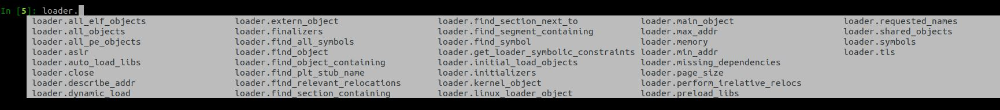
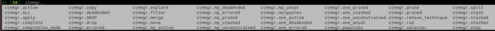
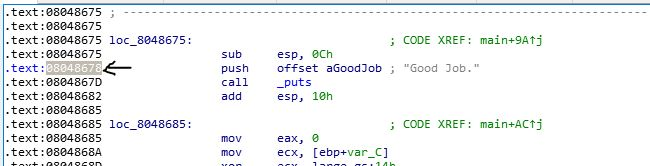
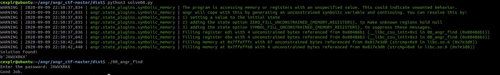
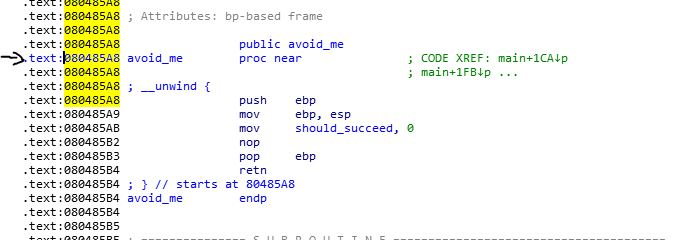
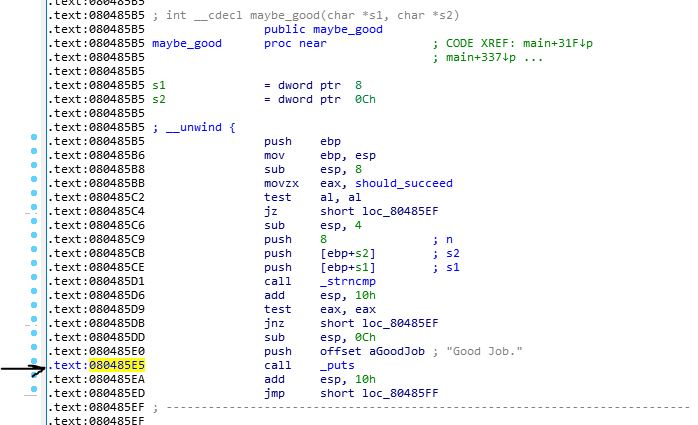
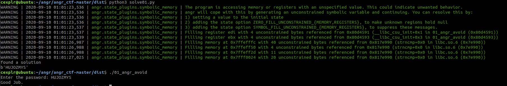

Welcome to cExplr's Blog
This is where things that looks interesting to me are stored in, easy or hard ~
Latest Post:
- Angr-CTF #2 - 02_angr_find_condition, 03_angr_symbolic_registers, 04_angr_symbolic_stack - 11th September 2020
- Angr-CTF #1 - Basic Concepts, 00_angr_find, 01_angr_avoid - 10th September 2020
- AllesCTF 2020 - Service Revolution - 7th September 2020
- ASUSWRT URL Processing Stack Buffer Overflow - 7th August 2020
ASUSWRT URL Processing Stack Buffer Overflow
Date : 7th August 2020
This is a blog post that details the Stack Buffer Overflow bug and how to exploit it and getting RCE.
While processing the URL for any blacklisted XSS list like the script tag in the check_xss_blacklist function, a stack buffer overflow is possible by extending the length of the URL when accessing the web interface of the ASUS Router. To exploit it, stack pivoting technique is used before chaining up ROP gadgets to call our own custom command. In this post, we show how this can be exploited to get a reverse shell.
This vulnerability exists in routers that are using ASUSWRT 3.0.0.4.384.20308 (2018/02/01), and for our purposes, we used the RT-AC88U.
Click here to get to the blogpost.
[Rev] Flag Service Revolution
7 September 2020
Team : HATS Singapore
Challenge File[s] : boot.dol
Description
Flag Service Revolution
Category: Reverse Engineering
Difficulty: Medium
Author: TheVamp, 0x4d5a
First Blood: LSE
Welcome to our great Flag{Service_Revolution}
Challenge Files:flag_service_revolution.7z
Feedback: Did you like the challenge? Thoughts? Give feedback here
What The File?
In this file, we are presented with mainly the boot.dol file. After a quick search on Google, we found this link.
DOL file extension - Nintendo GameCube executable.
It also says that we can use Dolphin to work with *.dol files.
DOLphin Emulator
We then download the Dolphin emulator version 5 from https://dolphin-emu.org/download/. Next, click on File -> Open... and select the boot.dol file.

Also, click on the Controllers icon. Make sure that the Wii Remote 1 is an Emulated Wii Remote. Click on configure to choose the choice of device, buttons and D-Pad. Once that is done, we can test our key input with the loaded game.

Note that there is also debugger built into the Dolphin Emulator though it is not really necessary.
Converting the Dol file to ELF
Throwing the dol file straight into Ghidra did not work. After a search dol file in ghidra, the first result points us to this link.
Gamecube executables are typically in a DOL format. While this can, in theory be analyzed, it�s much easier for Ghidra (and other tools) to analyze an ELF-format file.
To do this, we can use a tool aptly called DolTool. We will need to download the DolTool x0.3 - TenOfTen(LINUX) and compile it ourselves. Thankfully all it takes is g++ -o ./doltool *cpp and it should be compiled in no time.
Next run the following command.
$ ./doltool -e boot.dol
DolTool v0.3 - loser 2003
Converted boot.dol to to boot.elf
$ file boot.elf
boot.elf: ELF 32-bit MSB executable, PowerPC or cisco 4500, version 1 (SYSV), statically linked, stripped
This ELF should be recognizable by Ghidra.
Ghidra'ing boot.elf
The approach here is to do a strings to look for the No flag yet.... One of the functions referencing this string is FUN_8003d4c4(void).
The decompilation is as follows
void FUN_8003d4c4(void)
{
...
<REDACTED>
...
local_44 = DAT_803900a8;
local_54 = s_Great_803900a0._4_2_;
local_50 = DAT_803900ac;
local_74 = s_{Service_Revolution}!_803900b4._4_4_;
local_70 = s_{Service_Revolution}!_803900b4._8_4_;
local_42 = DAT_803900aa;
local_4c = DAT_803900b0;
local_58 = s_Great_803900a0._0_4_;
local_78 = s_{Service_Revolution}!_803900b4._0_4_;
local_6c = s_{Service_Revolution}!_803900b4._12_4_;
local_68 = s_{Service_Revolution}!_803900b4._16_4_;
local_64 = s_{Service_Revolution}!_803900b4._20_2_;
local_60 = s_Welcome_80390098._0_4_;
local_5c = s_Welcome_80390098._4_4_;
local_48 = 0x6f757200;
local_120 = s_No_buttons_pressed_yet_..._800a7fc0._12_4_;
local_11c = s_No_buttons_pressed_yet_..._800a7fc0._16_4_;
local_118 = s_No_buttons_pressed_yet_..._800a7fc0._20_4_;
local_114 = s_No_buttons_pressed_yet_..._800a7fc0._24_2_;
local_112 = s_No_buttons_pressed_yet_..._800a7fc0[26];
no_flag_yet_Str = s_No_flag_yet_..._800a7ff4._0_4_;
local_de = 0x111;
string_key_pressed = s_No_buttons_pressed_yet_..._800a7fc0._0_4_;
local_128 = s_No_buttons_pressed_yet_..._800a7fc0._4_4_;
local_124 = s_No_buttons_pressed_yet_..._800a7fc0._8_4_;
local_15c = s_No_flag_yet_..._800a7ff4._4_4_;
local_158 = s_No_flag_yet_..._800a7ff4._8_4_;
local_154 = s_No_flag_yet_..._800a7ff4._12_4_;
local_fb = 0;
local_111 = 0;
local_10d = 0;
local_109 = 0;
local_105 = 0;
local_101 = 0;
local_fd = 0;
FUN_800971b4(auStack336,0,0x22);
sequence = FUN_8003ebc4(auStack200,auStack404,PNG_801aa8e0,300,200);
if (sequence == 0) {
return;
}
iVar3 = 0xf;
FLAG = &no_flag_yet_Str;
sequence = 0;
FUN_80040594(auStack404,0x4c,0x3e);
iVar2 = 0;
iVar4 = 0x14;
FUN_800406e4((double)DAT_803900cc,auStack404);
local_16a = 0;
FUN_8003eb1c();
do {
iVar1 = FUN_8003eb74();
if (iVar1 == 0) {
FUN_8003eba0(&DAT_801d8f20,0x1b70d8);
}
/* doesnt enter here
*/
if (DAT_8044b998 != 0) {
FUN_8003eb54();
FUN_80041db0(auStack200);
FUN_80040458();
}
FUN_800568f4();
if (DAT_8044b958 == 0) {
/* enters here
*/
iVar4 = iVar4 + ((uint)(DAT_8044b954 == 0) - 1);
if (DAT_8044b950 == 0) goto LAB_8003d84c;
LAB_8003d74c:
iVar3 = iVar3 + 1;
}
else {
iVar4 = iVar4 + 1;
if (DAT_8044b950 != 0) goto LAB_8003d74c;
LAB_8003d84c:
/* comes here */
iVar3 = iVar3 + ((uint)(DAT_8044b94c == 0) - 1);
}
FUN_800993ec(auStack504,s_%s_%s_%s_%s_%s%s_80390084,&local_60,&local_44,&local_48,&local_58,
&local_50,&local_78);
FUN_80040fd8(displayString,iVar4,iVar3,auStack504);
key_code = get_keypress_FUN_800569b0(0);
if (key_code != 0) {
keypress_Strings_FUN_8003d2d4(key_code,(char *)&string_key_pressed);
if (sequence == 9) {
if ((key_code & 0x800) != 0) {
FLAG = (undefined4 *)&local_a0;
local_8e = local_5c._2_1_;
local_90 = local_6c._0_1_;
}
LAB_8003d8e4:
if (sequence == 0) {
LAB_8003d8ec:
sequence = 0;
if ((key_code & 8) != 0) {
sequence = 1;
local_80 = (char)local_58;
local_7e = local_78._1_1_ + ' ';
local_81 = local_60._2_1_;
local_a0 = (char)local_58 + -0x20;
local_83 = local_70._0_1_;
}
}
}
else {
if (sequence == 8) {
if ((key_code & 0x800) == 0) goto LAB_8003d8ec;
local_93 = local_58._2_1_;
sequence = 9;
local_98 = local_68._0_1_;
}
else {
if (sequence == 7) {
if ((key_code & 0x400) == 0) goto LAB_8003d8ec;
sequence = 8;
local_85 = (char)local_58;
local_82 = local_50._0_1_ + ' ';
local_92 = local_70._0_1_;
local_8d = local_68._2_1_;
}
else {
if (sequence == 6) {
if ((key_code & 0x400) == 0) goto LAB_8003d8ec;
sequence = 7;
local_7d = (undefined)local_68;
local_9f = local_50._1_1_ + -0x20;
local_9c = local_78._1_1_;
local_95 = (undefined)local_44;
}
else {
if (sequence == 5) {
if ((key_code & 0x100) == 0) goto LAB_8003d8ec;
sequence = 6;
local_7f = (undefined)local_50;
local_9d = (char)local_74 + -0x20;
local_7c = 0;
local_91 = local_54._0_1_;
}
else {
if (sequence == 4) {
if ((key_code & 0x200) == 0) goto LAB_8003d8ec;
sequence = 5;
local_96 = local_50._1_1_;
local_88 = local_58._0_1_ + ' ';
local_8b = local_60._1_1_;
local_97 = local_70._0_1_;
}
else {
if (sequence == 3) {
if ((key_code & 0x100) == 0) goto LAB_8003d8ec;
local_8a = local_58._1_1_;
sequence = 4;
local_8f = local_70._0_1_;
local_9b = local_78._0_1_;
local_89 = local_8f;
}
else {
if (sequence == 2) {
if ((key_code & 0x200) == 0) goto LAB_8003d8ec;
sequence = 3;
local_94 = (undefined)local_70;
local_87 = local_70._1_1_ + ' ';
local_86 = (char)local_74;
local_99 = local_74._1_1_;
}
else {
if (sequence != 1) goto LAB_8003d8e4;
if ((key_code & 4) == 0) goto LAB_8003d8ec;
sequence = 2;
local_84 = local_44._0_1_;
local_9e = local_6c._1_1_ + -0x20;
local_8c = (undefined)local_6c;
local_9a = local_60._0_1_;
}
}
}
}
}
}
}
}
}
iVar2 = iVar2 + 1;
key_code = (uint)local_16a;
if ((uint)(iVar2 * -0x33333333) < 0x33333334) {
key_code = key_code + 1 & 0xffff;
if (key_code == 0x1b) {
key_code = 0;
local_16a = 0;
}
else {
local_16a = (ushort)key_code;
}
}
FUN_80040630(auStack404,(int)local_18c,(int)local_18a,key_code);
FUN_80040fd8(displayString,0xf,100,&string_key_pressed);
FUN_80040fd8(displayString,0xf,0x82,FLAG);
FUN_80040270();
} while( true );
}
What this essentially is doing is to store the strings that we see in the running program like No buttons pressed yet ... and No flag yet .... These will be printed out onto the screen first. In the game loop, it would check for keypresses in which it would also return some sort of keycode based on the buttons pressed which will allow the right strings to be printed.
It detects keypressed based on bitmasking. In summary, these are the bitmasking for each of the buttons.
BITMASK = KEY PRESS
0x8 = A press
0x4 = B press
0x800 = up press
0x400 = down press
0x100 = left press
0x200 = right press
0x1000 = + press
0x10 = - press
0x1 = 1 press
0x2 = 2 press
Click here to see the decompilation of keypress_Strings_FUN_8003d2d4
void keypress_Strings_FUN_8003d2d4(uint key_code,char *pressed_key)
{
undefined4 uVar1;
undefined2 uVar2;
char cVar3;
undefined4 uVar4;
uVar2 = s_UUUUUUUUUUUUUUUUUUUUUUUUUUUUUUUU_8038ffbc._68_2_;
uVar1 = s_UUUUUUUUUUUUUUUUUUUUUUUUUUUUUUUU_8038ffbc._64_4_;
if ((key_code & 8) != 0) {
*(undefined4 *)pressed_key = s_UUUUUUUUUUUUUUUUUUUUUUUUUUUUUUUU_8038ffbc._60_4_;
*(undefined4 *)(pressed_key + 4) = uVar1;
*(undefined2 *)(pressed_key + 8) = uVar2;
}
uVar2 = s_Pressed_B_80390004._8_2_;
uVar1 = s_Pressed_B_80390004._4_4_;
if ((key_code & 4) != 0) {
*(undefined4 *)pressed_key = s_Pressed_B_80390004._0_4_;
*(undefined4 *)(pressed_key + 4) = uVar1;
*(undefined2 *)(pressed_key + 8) = uVar2;
}
cVar3 = s_Pressed_UP_80390010[10];
uVar2 = s_Pressed_UP_80390010._8_2_;
uVar1 = s_Pressed_UP_80390010._4_4_;
if ((key_code & 0x800) != 0) {
*(undefined4 *)pressed_key = s_Pressed_UP_80390010._0_4_;
*(undefined4 *)(pressed_key + 4) = uVar1;
*(undefined2 *)(pressed_key + 8) = uVar2;
pressed_key[10] = cVar3;
}
cVar3 = s_Pressed_DOWN_8039001c[12];
uVar4 = s_Pressed_DOWN_8039001c._8_4_;
uVar1 = s_Pressed_DOWN_8039001c._4_4_;
if ((key_code & 0x400) != 0) {
*(undefined4 *)pressed_key = s_Pressed_DOWN_8039001c._0_4_;
*(undefined4 *)(pressed_key + 4) = uVar1;
*(undefined4 *)(pressed_key + 8) = uVar4;
pressed_key[0xc] = cVar3;
}
cVar3 = s_Pressed_LEFT_8039002c[12];
uVar4 = s_Pressed_LEFT_8039002c._8_4_;
uVar1 = s_Pressed_LEFT_8039002c._4_4_;
if ((key_code & 0x100) != 0) {
*(undefined4 *)pressed_key = s_Pressed_LEFT_8039002c._0_4_;
*(undefined4 *)(pressed_key + 4) = uVar1;
*(undefined4 *)(pressed_key + 8) = uVar4;
pressed_key[0xc] = cVar3;
}
uVar2 = s_Pressed_RIGHT_8039003c._12_2_;
uVar4 = s_Pressed_RIGHT_8039003c._8_4_;
uVar1 = s_Pressed_RIGHT_8039003c._4_4_;
if ((key_code & 0x200) != 0) {
*(undefined4 *)pressed_key = s_Pressed_RIGHT_8039003c._0_4_;
*(undefined4 *)(pressed_key + 4) = uVar1;
*(undefined4 *)(pressed_key + 8) = uVar4;
*(undefined2 *)(pressed_key + 0xc) = uVar2;
}
cVar3 = s_Pressed_PLUS_8039004c[12];
uVar4 = s_Pressed_PLUS_8039004c._8_4_;
uVar1 = s_Pressed_PLUS_8039004c._4_4_;
if ((key_code & 0x1000) != 0) {
*(undefined4 *)pressed_key = s_Pressed_PLUS_8039004c._0_4_;
*(undefined4 *)(pressed_key + 4) = uVar1;
*(undefined4 *)(pressed_key + 8) = uVar4;
pressed_key[0xc] = cVar3;
}
uVar2 = s_Pressed_MINUS_8039005c._12_2_;
uVar4 = s_Pressed_MINUS_8039005c._8_4_;
uVar1 = s_Pressed_MINUS_8039005c._4_4_;
if ((key_code & 0x10) != 0) {
*(undefined4 *)pressed_key = s_Pressed_MINUS_8039005c._0_4_;
*(undefined4 *)(pressed_key + 4) = uVar1;
*(undefined4 *)(pressed_key + 8) = uVar4;
*(undefined2 *)(pressed_key + 0xc) = uVar2;
}
uVar2 = s_Pressed_1_8039006c._8_2_;
uVar1 = s_Pressed_1_8039006c._4_4_;
if ((key_code & 2) == 0) {
if ((key_code & 1) == 0) {
return;
}
}
else {
*(undefined4 *)pressed_key = s_Pressed_1_8039006c._0_4_;
*(undefined2 *)(pressed_key + 8) = uVar2;
*(undefined4 *)(pressed_key + 4) = uVar1;
if ((key_code & 1) == 0) {
return;
}
}
uVar2 = s_Pressed_2_80390078._8_2_;
uVar1 = s_Pressed_2_80390078._4_4_;
*(undefined4 *)pressed_key = s_Pressed_2_80390078._0_4_;
*(undefined4 *)(pressed_key + 4) = uVar1;
*(undefined2 *)(pressed_key + 8) = uVar2;
return;
}
Getting the flag
When tracing what gets printed onto the screen, we suspect heavily that the flag would be printed when the sequence of key presses are correct. We also suspect that the flag gets printed in the space of No flag yet .... Tracking that ,), we see another usage of that variable, (refactored as FLAG , in one place which is "sequence" 9.
All we need to do is to move from sequence to sequence.
...
...
if (sequence == 9) {
if ((key_code & 0x800) != 0) {
FLAG = (undefined4 *)&local_a0; // <- REACH HERE
local_8e = local_5c._2_1_;
local_90 = local_6c._0_1_;
}
LAB_8003d8e4:
if (sequence == 0) {
LAB_8003d8ec:
sequence = 0;
if ((key_code & 8) != 0) { // <-- A PRESS
sequence = 1;
local_80 = (char)local_58;
local_7e = local_78._1_1_ + ' ';
local_81 = local_60._2_1_;
local_a0 = (char)local_58 + -0x20;
local_83 = local_70._0_1_;
}
}
}
else {
if (sequence == 8) {
if ((key_code & 0x800) == 0) goto LAB_8003d8ec; // <-- UP PRESS
local_93 = local_58._2_1_;
sequence = 9;
local_98 = local_68._0_1_;
...
...
// Continue on and chain them up from sequence 0 to 9
After the quick trace, we see that we are supposed to press <A><B><RIGHT><LEFT><RIGHT><LEFT><DOWN><DOWN><UP><UP>
Trying that on the program and we flagged!

FLAG : ALLES{Wii_love_to_enter_great_flags}
Angr-CTF #1 (Basic Concepts -> 00_angr_find -> 01_angr_avoid)

This writeup attempts to start from the basic concepts in the first few challenges before getting more detailed in the later challenges.
Description
Angr is a python framework that is used for binary analysis by combining both static and dynamic symbolic analysis. There are many usages of this framework including in CTFs like ROPChaining, SMT solving (z3 as backend) and others. For this post(s), it is meant to be a more detailed writeup on the challenges with reference to the angr API. You can find the challenges from https://github.com/jakespringer/angr_ctf. It includes the solution and scaffolds [ helper code structure ] to aid in learning angr.
You can view Angr's documentations from http://angr.io/api-doc/
What is Symbolic Execution
WIKIPEDIA SAYS:
In computer science, symbolic execution (also symbolic evaluation or symbex) is a means of analyzing a program to determine what inputs cause each part of a program to execute. An interpreter follows the program, assuming symbolic values for inputs rather than obtaining actual inputs as normal execution of the program would. It thus arrives at expressions in terms of those symbols for expressions and variables in the program, and constraints in terms of those symbols for the possible outcomes of each conditional branch.
This allows us to "follow" marked variables/registers/memory and see what changes during the execution of the program which makes it useful for binary analysis. Coupled with a SMT solver like Z3 solver, we can solve values based on constraints that can be added by the user based on the program's analysis.
Installing Angr
You can choose to install and setup a virtualenv be it a virtual machine or via python's mkvirtualenv command.
Installing angr via pip would be as easy as :
pip install angr
For me, I am doing it in a ubuntu18 VM with python3 and relied mostly on the documentations and ipython3. You can install ipython3 via pip as well. What's amazing is that you can generate variants of the challenges with their generate.py file and it would generate c code before compiling it with GCC. For this writeups, I will be using the binary under the dist folder with IDA as our decompiler. You can choose to use Ghidra as well and their symbols should still be intact since these 32bits binaries are not stripped of their symbols.
00_angr_find
Since this is the first challenge, there will be a little more details on some of the components of Angr that I hope is sufficient to help us understand how to use the basics of Angr. There will be examples of usages of some of the key components which can also be lifted off the documentations. As we visit more challenges, only the critical part would be covered so bear with me for this first one.
The decompilation
int __cdecl main(int argc, const char **argv, const char **envp)
{
signed int i; // [esp+1Ch] [ebp-1Ch]
char s1[9]; // [esp+23h] [ebp-15h]
unsigned int v6; // [esp+2Ch] [ebp-Ch]
v6 = __readgsdword(0x14u);
printf("Enter the password: ");
__isoc99_scanf("%8s", s1);
for ( i = 0; i <= 7; ++i )
s1[i] = complex_function(s1[i], i);
if ( !strcmp(s1, "JACEJGCS") )
puts("Good Job.");
else
puts("Try again.");
return 0;
}
The main function is short and simple. It gets the user input from stdin. It only requires 8 bytes as password and for each of teh eight characters, a complex_function is applied to it. At the end of the day, those manupulations should cause the password to be transformed into JACEJGCS before printing a good job message which is the goal of this exercise.
Let's check out the complex_function.
int __cdecl complex_function(signed int a1, int a2)
{
if ( a1 <= 64 || a1 > 90 )
{
puts("Try again.");
exit(1);
}
return (3 * a2 + a1 - 65) % 26 + 65;
}}
This complex function takes in two arguments. The first argument would be the s[i] which is the user's input at the i-th index and the second argument would be the i-index itself. It checks that they are ASCII printable characters before doing some sort of transformation to it, specifically (3 * a2 + a1 - 65) % 26 + 65, before returning that value.
Creating new Project
To start, lets fire up ipython3 and import Angr. It might take a little while to import at first.
import angr
The next step would be to create a new project. Referencing http://angr.io/api-doc/, we can go to the Project to see what arguments are being accepted.
class angr.project.Project(thing, default_analysis_mode=None, ignore_functions=None, use_sim_procedures=True, exclude_sim_procedures_func=None, exclude_sim_procedures_list=(), arch=None, simos=None, engine=None, load_options: Dict[str, Any] = None, translation_cache=True, support_selfmodifying_code=False, store_function=None, load_function=None, analyses_preset=None, concrete_target=None, **kwargs)
also, according to document, any other additional keywords will be passed into the cle.loader. CLE refers to the binary loader that angr use to be placed into memory almost like how the binary would be loaded when the binary is being run. This also means that the arguments used in this following loader class can be placed into the Project arguments as a fast way to configure the project and the loader at the same time.
class cle.loader.Loader(main_binary, auto_load_libs=True, concrete_target=None, force_load_libs=(), skip_libs=(), main_opts=None, lib_opts=None, ld_path=(), use_system_libs=True, ignore_import_version_numbers=True, case_insensitive=False, rebase_granularity=1048576, except_missing_libs=False, aslr=False, perform_relocations=True, load_debug_info=False, page_size=1, preload_libs=(), arch=None)
For this binary, we can set the settings to its default and just passing in the thing, basically the path to the binary for the Project instantiation.
project = angr.Project("./00_angr_find")
Loader
Learn more about the loader from https://docs.angr.io/core-concepts/loading. In short, cited from this site:
The CLE loader (cle.Loader) represents an entire conglomerate of loaded binary objects, loaded and mapped into a single memory space. Each binary object is loaded by a loader backend that can handle its filetype (a subclass of cle.Backend). For example, cle.ELF is used to load ELF binaries.
We can explore more with the loader.
loader = project.loader

Also, we can see the main object which reveals things like it's section, PLT, architecture and things like whether Position Independent Code is present.
In [10]: mainobj.pic
Out[10]: False
In [11]: mainobj.arch
Out[11]: <Arch X86 (LE)>
In [12]: mainobj.plt
Out[12]:
{'__gmon_start__': 134513728,
'__isoc99_scanf': 134513712,
'__libc_start_main': 134513696,
'__stack_chk_fail': 134513648,
'exit': 134513680,
'printf': 134513632,
'puts': 134513664,
'strcmp': 134513616}
Also, we can just leave the loader as it is.
The Solver Engine
In Angr, we can use "mark" things like variables, memory and registers. Angr uses claripy as backend for that purpose. Here, we can also use claripy as a frontend to Z3 to solve simple constraints. We can see the example at http://angr.io/api-doc/claripy.html.
import claripy
a = claripy.BVS("sym_val", 32)
b = claripy.RotateLeft(a, 8)
c = b + 4
s = claripy.Solver()
s.add(c == 0x41424344)
assert s.eval(c, 1)[0] == 0x41424344
assert s.eval(a, 1)[0] == 0x40414243
When we work with claripy in angr, we can also use it to "mark" values at given state. In Agnr, the state is also referred to as angr.sim_state.SimState or just SimState. We can get a state via project.factory. project.factory contains several constructors for common object that are frequently used like getting basic blocks of code from a specified address and also states!
States
There are several states that are available to get from the loaded binary and those states can be customized through arguments in those constructors. The following table is lifted off from https://docs.angr.io/core-concepts/states
| States | Description |
|---|---|
| .blank_state() | Constructs 'blank state' with most of the data uninitialized.When accessing uninitialized data, an unconstrained symbolic value will be returned. |
| .entry_state() | constructs a state ready to execute at the main binary's entry point. |
| .full_init_state() | constructs a state that is ready to execute through any initializers that need to be run before the main binary's entry point, for example, shared library constructors or preinitializers. |
| .call_state() | constructs a state ready to execute a given function. |
For this binary, we only need to get the entry state.
Click here to see the help page for entry_state
In [16]: state = project.factory.entry_state?
Signature: project.factory.entry_state(**kwargs) -> angr.sim_state.SimState
Docstring:
Returns a state object representing the program at its entry point. All parameters are optional.
:param addr: The address the state should start at instead of the entry point.
:param initial_prefix: If this is provided, all symbolic registers will hold symbolic values with names
prefixed by this string.
:param fs: a dictionary of file names with associated preset SimFile objects.
:param concrete_fs: boolean describing whether the host filesystem should be consulted when opening files.
:param chroot: a path to use as a fake root directory, behaves similar to a real chroot. used only when
concrete_fs is set to True.
:param argc: a custom value to use for the program's argc. May be either an int or a bitvector. If
not provided, defaults to the length of args.
:param args: a list of values to use as the program's argv. May be mixed strings and bitvectors.
:param env: a dictionary to use as the environment for the program. Both keys and values may be
mixed strings and bitvectors.
:return: The entry state.
:rtype: SimState
File: ~/.local/lib/python3.6/site-packages/angr/factory.py
Type: method
Since we are not dealing with argc and argv, we can ignore those parameters. These will be especailly useful when we want to "mark" those values.
In [18]: state = project.factory.entry_state()
In [19]: state
Out[19]: <SimState @ 0x8048450>
Simulation Manager
Simulation Manager simulates the flow of the program. This also allows us to move from one state to the other starting from the state that we constructed at the beginning. It is also the primary interface in Angr for performing execution, simulation with states. For example, it allows you to step forward, filter, merge and move around as you wish. This simulation manager can contain several staashes of states. The default stash is known as active.
In [23]: simmgr = p.factory.simulation_manager?
Signature: p.factory.simulation_manager(thing:Union[List[angr.sim_state.SimState], angr.sim_state.SimState, NoneType]=None, **kwargs) -> 'SimulationManager'
)
In [26]: simmgr = p.factory.simulation_manager(state)
In [27]: simmgr
Out[27]: <SimulationManager with 1 active>
In [28]: simmgr.active
Out[28]: [<SimState @ 0x8048450>]
In [29]: len(simmgr.active)
Out[29]: 1
In [30]: simmgr.active[0]
Out[30]: <SimState @ 0x8048450>
Here, we can start also access the state's register and memory as well. For example if we want to find the value of the instruction pointer.
In [31]: initialstate = simmgr.active[0]
In [32]: initialstate.regs.eip
Out[32]: <BV32 0x8048450>
Now we can also start to explore the simulation manager more

One very useful function that we can use is the explore function. This allows us to run the program and let the program explore the binary.
In [34]: simmgr.explore?
Signature: simmgr.explore(stash='active', n=None, find=None, avoid=None, find_stash='found', avoid_stash='avoid', cfg=None, num_find=1, **kwargs)
Docstring:
Tick stash "stash" forward (up to "n" times or until "num_find" states are found), looking for condition "find",
avoiding condition "avoid". Stores found states into "find_stash' and avoided states into "avoid_stash".
The "find" and "avoid" parameters may be any of:
- An address to find
- A set or list of addresses to find
- A function that takes a state and returns whether or not it matches.
If an angr CFG is passed in as the "cfg" parameter and "find" is either a number or a list or a set, then
any states which cannot possibly reach a success state without going through a failure state will be
preemptively avoided.
File: ~/.local/lib/python3.6/site-packages/angr/sim_manager.py
Type: method
The one that we want to use is the find parameter. This allows us to state address(es) we want to find. To do that, we can go back to the disassembler to find an address that we want to hit.

Here is what it might look like when you explore the address that we want to find.
In [35]: find = 0x08048678
In [36]: simmgr.explore(find=find)
WARNING | 2020-09-09 22:30:05,106 | angr.state_plugins.symbolic_memory | The program is accessing memory or registers with an unspecified value. This could indicate unwanted behavior.
WARNING | 2020-09-09 22:30:05,107 | angr.state_plugins.symbolic_memory | angr will cope with this by generating an unconstrained symbolic variable and continuing. You can resolve this by:
WARNING | 2020-09-09 22:30:05,107 | angr.state_plugins.symbolic_memory | 1) setting a value to the initial state
...
...
...
Out[36]: <SimulationManager with 1 active, 16 deadended, 1 found>
We should now be able to see that there is one that is active and found. To see what is being found,
In [40]: simmgr.found[0]
Out[40]: <SimState @ 0x8048678>
This means that there is a state where the program actually would hit that address that we desire which means that there is a satisfiable solution. Now all that we need to do is to dump the string that Angr wrote to the stdin. To do that, we will need to access the state and get the information about the os before dumping the string at the file descriptor.
In [43]: import sys
In [44]: found = simmgr.found[0]
In [45]: found.posix.dumps(sys.stdin.fileno())
Out[46]: b'JXWVXRKX'
With that value being dumped out, we can now test that value.
The Script
import angr
import sys
# Create a new project with the following constructor
# The current default one is good enough for now
project = angr.Project("./00_angr_find")
# Construct the current state that we want to run from the main function
state = project.factory.entry_state()
# Construct our simulation manager based off the current state
simmgr = project.factory.simulation_manager(state)
# This is the address where the "Good Job" text would be printed out
find = 0x08048678
# Start the exploration to find the state whereby the input value would execute the selected find address
simmgr.explore(find=find)
if simmgr.found[0]:
found = simmgr.found[0]
print("Solution Found!")
# print out the the stdin that angr has input and dump out the string from the file desciptor
print(found.posix.dumps(sys.stdin.fileno()))
else:
print("No solutions found! :<")

01_angr_avoid
This challenge aims to show us about the avoid address which we can specify for Angr so that it would know that it is going down the wrong path and should retry. Like the find argument, we can also add the avoid argument as well in the explore function. Now, let's begin.
As usual, I tried opening the binary in IDA however there is a message by IDA saying that there are more than 1000 nodes to be displayed on the screen and that it failed to decompile because the function is too big. I have also tried to open it in Ghidra but it will take a very long time as well.
cexplr@ubuntu:~/angr/angr_ctf-master/01_angr_avoid$ ls -alh output.c
-rw-r--r-- 1 cexplr cexplr 834K Sep 10 00:22 output.c
Just form the disassembly in IDA and Ghidra, we see that there are many checks and many avoid_me functions being called as well. We can edit the generate.py file in the challenge files outside of the dist folder.
# This is the new generate.py file to store a sample c code into an output.c file
#!/usr/bin/env pypy
import sys, random, os, tempfile
from templite import Templite
def generate(argv):
if len(argv) != 3:
print 'Usage: pypy generate.py [seed] [output_file]'
sys.exit()
seed = argv[1]
output_file = argv[2]
random.seed(seed)
description = ''
with open(os.path.join(os.path.dirname(os.path.realpath(__file__)), 'description.txt'), 'r') as desc_file:
description = desc_file.read().encode('string_escape').replace('\"', '\\\"')
random_list = [random.choice([True, False]) for _ in xrange(64)]
template = open(os.path.join(os.path.dirname(os.path.realpath(__file__)), '01_angr_avoid.c.templite'), 'r').read()
c_code = Templite(template).render(description=description, random_list=random_list)
with tempfile.NamedTemporaryFile(delete=False, suffix='.c') as temp:
temp.write(c_code)
f = open("output.c","w")
f.write(c_code)
f.close()
temp.seek(0)
os.system('gcc -m32 -o ' + output_file + ' ' + temp.name)
if __name__ == '__main__':
generate(sys.argv)
We see that the file is huge.
To figure out why, we can look at the 01_angr_avoid.c.templite file. THis is the recursive part which keeps adding checks and for each time it calls itself, it would also add c code which thus makes it a super long check.
${
import random, os
random.seed(os.urandom(8))
userdef_charset = 'ABCDEFGHIJKLMNOPQRSTUVWXYZ'
userdef = ''.join(random.choice(userdef_charset) for _ in range(8))
def check_string_recursive(array0, array1, random_list, bit):
if bit < 0:
write('maybe_good(%s, %s);' % (array0, array1))
else:
if random_list[0]:
write('if (CHECK_BIT(%s, %d) == CHECK_BIT(%s, %d)) {' % (array0, bit, array1, bit))
check_string_recursive(array0, array1, random_list[1:], bit-1)
write('} else { avoid_me(); ')
check_string_recursive(array0, array1, random_list[1:], bit-1)
write('}')
else:
write('if (CHECK_BIT(%s, %d) != CHECK_BIT(%s, %d)) { avoid_me();' % (array0, bit, array1, bit))
check_string_recursive(array0, array1, random_list[1:], bit-1)
write('} else { ')
check_string_recursive(array0, array1, random_list[1:], bit-1)
write('}')
}$
The output would look something like
#define _GNU_SOURCE
#include <stdio.h>
#include <stdlib.h>
#include <string.h>
#include <unistd.h>
#include <stdint.h>
#define USERDEF "UFWSAIZV"
#define LEN_USERDEF 8
// return true if nth bit of array is 1
#define CHECK_BIT(array, bit_index) (!!(((uint8_t*) array)[bit_index / 8] & (((uint8_t) 0x1) << (bit_index % 8))))
char msg[] =
"placeholder\n";
uint8_t should_succeed = 1;
void print_msg() {
printf("%s", msg);
}
int complex_function(int value, int i) {
#define LAMBDA 5
if (!('A' <= value && value <= 'Z')) {
printf("Try again.\n");
exit(1);
}
return ((value - 'A' + (LAMBDA * i)) % ('Z' - 'A' + 1)) + 'A';
}
void avoid_me() {
should_succeed = 0;
}
void maybe_good(char* compare0, char* compare1) {
if (should_succeed && !strncmp(compare0, compare1, 8)) {
printf("Good Job.\n");
} else {
printf("Try again.\n");
}
}
int main(int argc, char* argv[]) {
char buffer[20];
char password[20];
//print_msg();
for (int i=0; i < 20; ++i) {
password[i] = 0;
}
strncpy(password, USERDEF, LEN_USERDEF);
printf("Enter the password: ");
scanf("%8s", buffer);
for (int i=0; i<LEN_USERDEF; ++i) {
buffer[i] = (char) complex_function(buffer[i], i);
}
...
...
...
...
...
...
if (CHECK_BIT(buffer, 0) != CHECK_BIT(password, 0)) {
avoid_me();
maybe_good(buffer, password);}
else { maybe_good(buffer, password);}
}
else {
if (CHECK_BIT(buffer, 0) != CHECK_BIT(password, 0)) {
avoid_me();
maybe_good(buffer, password);
} else {
maybe_good(buffer, password);}
}}
else { if (CHECK_BIT(buffer, 1) != CHECK_BIT(password, 1)) { avoid_me();if (CHECK_BIT(buffer, 0) != CHECK_BIT(password, 0)) { avoid_me();maybe_good(buffer, password);} else { maybe_good(buffer, password);}} else { if (CHECK_BIT(buffer, 0) != CHECK_BIT(password, 0)) { avoid_me();maybe_good(buffer, password);} else { maybe_good(buffer, password);}}}} else { if (CHECK_BIT(buffer, 2) != CHECK_BIT(password, 2)) { avoid_me();if (CHECK_BIT(buffer, 1) != CHECK_BIT(password, 1)) { avoid_me();if (CHECK_BIT(buffer, 0) != CHECK_BIT(password, 0)) { avoid_me();maybe_good(buffer, password);} else { maybe_good(buffer, password);}} else { if (CHECK_BIT(buffer, 0) != CHECK_BIT(password, 0)) { avoid_me();maybe_good(buffer, password);} else { maybe_good(buffer, password);}}} else { if (CHECK_BIT(buffer, 1) != CHECK_BIT(password, 1)) { avoid_me();if (CHECK_BIT(buffer, 0) != CHECK_BIT(password, 0)) { avoid_me();maybe_good(buffer, password);} else { maybe_good(buffer, password);}} else { if (CHECK_BIT(buffer, 0) != CHECK_BIT(password, 0)) { avoid_me();maybe_good(buffer, password);} else { maybe_good(buffer, password);}}}}}}}}}}}}}
Here we can see that after the user has input the password, it would go throught a complex function for each character. After the input has been transformed, monstrous amount of checks are being done and anytime a check fails, it would set should_succeed to 0 which is in the avoid_me function. Additionally, with that number of checks, it is really impossible tedious to reverse and find out what value it should be in the end. So let's begin writing a script in angr.
Note that we know that there are many avoid_me functions that we should , of course, avoid. We can get those address from the disassembler.

We can also find the maybe_good function where the Good Job string would be printed.

Writing the Script
import angr
import sys
# Create the project and load the binary
project = angr.Project("./01_angr_avoid")
# Create a state based on the current loaded binary
state = project.factory.entry_state()
# Construct the simulation manager set with the current state
simmgr = project.factory.simulation_manager(state)
# Find the address to find and avoid
find = 0x80485e5
avoid = 0x80485a8
# Start exploring different inputs and hopefully find the find function that we want
simmgr.explore(find=find,avoid=avoid)
# if there is a solution,
if simmgr.found[0]:
print("found a solution")
# Print out the input that Angr had found
print(simmgr.found[0].posix.dumps(sys.stdin.fileno()))
else:
print("No found solutions")
Test the solution
Run and test the output if any

Angr-CTF #2 [02_angr_find_condition -> 03_angr_symbolic_register -> 04_angr_symbolic_stack]
Description
Welcome to part 2 of Angr-CTF post. This will be on a discussion on the next three challenges: 02_angr_find_condition where we will learn to detect good or bad paths based on output strings, 03_angr_symbolic_registers where we will "mark" registers and lastly 04_angr_symbolic_stack where we will set up the stack in a blank state and exploring after the setup.
02_angr_find_condition
This exercise is to show us another usage of the find and avoid function.
The "find" and "avoid" parameters may be any of:
- An address to find
- A set or list of addresses to find
- A function that takes a state and returns whether or not it matches
For this exercise, it will explore the use of those functions with afunction that takes a state and returns whether or not it matches.
This binary is still very similar and the only difference we will do for this exercise is to match a find when the stdout prints Good Job and a match to avoid when the stdout prints Try again.. Keep in mind that stdout is in bytes.
How this work is that time a state changes during an exploration, it would check the std output to check for that string. If none of the string matches, continue on.
We can come up with those two functions.
import angr
import sys
def success(curr_state):
# Get the value of the stdout at the current state
stdout_str = curr_state.posix.dumps(sys.stdout.fileno())
return b"Good Job" in stdout_str # Will return whether or not it matches
def fail(curr_state):
# Get the value of the stdout at the current state
stdout_str = curr_state.posix.dumps(sys.stdout.fileno())
return b"Try again" in stdout_str # Will return whether or not it matches
The next few steps should now be highly familiar to you at this moment so we shall just head straight into the full script and just adding those two functions as find and avoid
Full Script
import angr
import sys
def success(curr_state):
# Get the value of the stdout at the current state
stdout_str = curr_state.posix.dumps(sys.stdout.fileno())
return b"Good Job" in stdout_str # Will return whether or not it matches
def fail(curr_state):
# Get the value of the stdout at the current state
stdout_str = curr_state.posix.dumps(sys.stdout.fileno())
return b"Try again" in stdout_str # Will return whether or not it matches
# Set up a project and load the binary
project = angr.Project("./02_angr_find_condition")
# Construct an entry state to be run from main
state = project.factory.entry_state()
# Construct a simulation manager with the initial state
simmgr = project.factory.simulation_manager(state)
# start exploring based on the function that accepts a state and returns whether or not it matches.
simmgr.explore(find=success,avoid=fail)
if simmgr.found[0]:
print("Solution found!")
print(simmgr.found[0].posix.dumps(sys.stdin.fileno()))
else:
print("No solution found")
# UFOHHURD

03_angr_symbolic_registers
For this challenge, it is a little more interesting. It will give us a taste of creating and initializing some components of a blank_state and three of its regsiters starting from a non-main function address.
Let's dive straight down into the decompilation.
int __cdecl main(int argc, const char **argv, const char **envp)
{
int v3; // ebx
int v4; // eax
int v5; // edx
int v6; // ST1C_4
unsigned int v7; // ST14_4
unsigned int v9; // [esp+8h] [ebp-10h]
unsigned int v10; // [esp+Ch] [ebp-Ch]
printf("Enter the password: ");
v4 = get_user_input();
v6 = v5;
v7 = complex_function_1(v4);
v9 = complex_function_2(v3);
v10 = complex_function_3(v6);
if ( v7 || v9 || v10 )
puts("Try again.");
else
puts("Good Job.");
return 0;
}
The main function seems a little weird. Firstly, we get some form of user input which there wil be three variables being put into different complex functions. What is strange is that there seem to be no references to this local variables which makes it an uninitialized variable. Later on, the result of the complex functions are then compared to make sure that they are 0 else it will fail.
Click here to see the decompilations of all three complex functions
unsigned int __cdecl complex_function_1(int a1)
{
return (((((((((((((((((((((a1 + 17062705) ^ 0xB168C552) + 647103529) ^ 0x9F14CFD7) - 548738866) ^ 0xF78063EF)
- 1352480098) ^ 0x5D1F4C6)
- 57802472) ^ 0xB6F70BF8)
- 1347645151
+ 648671421) ^ 0x3D5082FE)
- 9365053) ^ 0xD0150EAD)
+ 1067946459) ^ 0xE6E03877)
- 359192087
+ 961945065) ^ 0xE1EECD69)
- 1817072919) ^ 0x6B86ECF5)
- 449212884) ^ 0x2012CCDB;
}
unsigned int __cdecl complex_function_2(int a1)
{
return (((((((((((((((((((((((((a1 + 488799652) ^ 0x5E3307AF) - 177708255) ^ 0xF4CE17EB) - 201900821) ^ 0x5258EFD1)
- 1211402798) ^ 0x25DB9B81)
- 1561143269
+ 429947764) ^ 0xC8788683)
+ 38428841) ^ 0x54FC78E8)
- 1037482775) ^ 0x42C3BC1E)
- 1210432369) ^ 0x72753AEA)
+ 627549795) ^ 0xD03DF7C8)
- 105848572
+ 1068891943) ^ 0x9DF87491)
+ 514536287) ^ 0xE411081C)
- 1559650067) ^ 0xCD5950F1)
- 1664779985) ^ 0xC7340566;
}
unsigned int __cdecl complex_function_3(int a1)
{
return ((((((((((((((((((a1 ^ 0xA6990438) - 1507377574 + 492465943) ^ 0x4C129858) - 1488446618) ^ 0x7D335ACB)
- 888160389) ^ 0xE856BBFB)
- 1014728623) ^ 0x30BC8744)
- 315821521) ^ 0x97DEA993)
+ 1606484862) ^ 0x3FCFCEE1)
+ 240258290) ^ 0x97BB1E9F)
- 769192860) ^ 0x571665D0)
- 1220358966
+ 845065664) ^ 0xE61DCE92;
}
Let us take a look at the user input to figure out what is going on.
int get_user_input()
{
int v1; // [esp+0h] [ebp-18h]
int v2; // [esp+4h] [ebp-14h]
int v3; // [esp+8h] [ebp-10h]
unsigned int v4; // [esp+Ch] [ebp-Ch]
v4 = __readgsdword(0x14u);
__isoc99_scanf("%x %x %x", &v1, &v2, &v3);
return v1;
}
It seems like we are geting in three user inputs in hexadecimal form and storing into get_user_input's local variables and returning just the first value, v1. Which does not make too much sense. However, this will get clarified when we dive into the disassembly.
; int __cdecl main(int argc, const char **argv, const char **envp)
public main
main proc near
var_14= dword ptr -14h
var_10= dword ptr -10h
var_C= dword ptr -0Ch
var_4= dword ptr -4
argc= dword ptr 8
argv= dword ptr 0Ch
envp= dword ptr 10h
lea ecx, [esp+4]
and esp, 0FFFFFFF0h
push dword ptr [ecx-4]
push ebp
mov ebp, esp
push ecx
sub esp, 14h
sub esp, 0Ch
push offset aEnterThePasswo ; "Enter the password: "
call _printf
add esp, 10h
call get_user_input
mov [ebp+var_14], eax # This is the first value
mov [ebp+var_10], ebx
mov [ebp+var_C], edx
sub esp, 0Ch
push [ebp+var_14] <------- EAX
call complex_function_1
add esp, 10h
mov ecx, eax
mov [ebp+var_14], ecx
sub esp, 0Ch
push [ebp+var_10] <------- EBX
call complex_function_2
add esp, 10h
mov ecx, eax
mov [ebp+var_10], ecx
sub esp, 0Ch
push [ebp+var_C] <------- EDX
call complex_function_3
add esp, 10h
mov ecx, eax
...
...
We can see that the values pushed are marked with <------- and its registers. The corresponding registers are determined by finding where did [ebx+var_???] gets written in the disassembly.
mov [ebp+var_14], eax # This is the first value
mov [ebp+var_10], ebx
mov [ebp+var_C], edx
After that if we were to look into the disassembly of get_user_input function.
push ebp
mov ebp, esp
sub esp, 18h
mov ecx, large gs:14h
mov [ebp+var_C], ecx
xor ecx, ecx
lea ecx, [ebp+var_10] #The third address for scanf
push ecx
lea ecx, [ebp+var_14] # The second address of scanf
push ecx
lea ecx, [ebp+var_18] # The first address of scanf
push ecx
push offset aXXX ; "%x %x %x"
call ___isoc99_scanf
add esp, 10h
mov ecx, [ebp+var_18] # first adderss of scanf
mov eax, ecx <------- eax value = first address of scanf
mov ecx, [ebp+var_14] # second address of scanf
mov ebx, ecx <------- ebx value = second address of scanf
mov ecx, [ebp+var_10] # third address of scanf
mov edx, ecx <------- edx value = third address of scanf
From this disassembly, values of registers eax,ebx and edx are being determined by scanf in the get_user_input function.
As a recap, remember that we can "mark" registers and those registers are stored in SimStates.
For example:
In [4]: state = p.factory.entry_state()
In [5]: state.regs.rax
In [6]: state.regs.eax
Out[6]: <BV32 0x1c>
Bitvectors
Before attempting the challenge, we should understanding the basics of bitvectors.
According to https://docs.angr.io/core-concepts/solver#working-with-bitvectors,
A bitvector is just a sequence of bits, interpreted with the semantics of a bounded integer for arithmetic.
With this, we can now create symbolic variables which we want to "mark". for instance,
In [10]: symbolName = state.solver.BVS("symbolName",32)
# We can also do mathematical equations with them
In [11]: symbolName + 2
Out[11]: <BV32 symbolName_5_32 + 0x2>
In [12]: symbolName /4 + symbolName
Out[12]: <BV32 symbolName_5_32 / 0x4 + symbolName_5_32>
However we should note that bitvector can only do math with those of the same bit length
In [14]: ninebit = state.solver.BVS("ninebit",9)
In [15]: ninebit + symbolName
---------------------------------------------------------------------------
ClaripyOperationError Traceback (most recent call last)
<ipython-input-15-0d285337272a> in <module>()
----> 1 ninebit + symbolName
/home/cexplr/.local/lib/python3.6/site-packages/claripy/operations.py in _op(*args)
48 success, msg = extra_check(*fixed_args)
49 if not success:
---> 50 raise ClaripyOperationError(msg)
51
52 #pylint:disable=too-many-nested-blocks
ClaripyOperationError: args' length must all be equal
We can solve that by either using zero_extend function which extending with zeros with the number of bits that you want to extend or the sign_extend to duplicate teh sign bits. The following example shows the usage of zero_extend function.
In [16]: ninebit.zero_extend?
Signature: ninebit.zero_extend(n)
Docstring:
Zero-extends the bitvector by n bits. So:
a = BVV(0b1111, 4)
b = a.zero_extend(4)
b is BVV(0b00001111)
File: ~/.local/lib/python3.6/site-packages/claripy/ast/bv.py
Type: method
In [17]: ninebit.zero_extend(32-ninebit.length)
Out[17]: <BV32 0#23 .. ninebit_6_9>
In [18]: symbolName = symbolName + ninebit.zero_extend(32-ninebit.length)
In [19]: symbolName
Out[19]: <BV32 symbolName_5_32 + (0#23 .. ninebit_6_9)>
Apart from Bit Vector Symbols (BVS), we can also add Bit Vector Values(BVV). We can for example create a 32 bit number of the value 10.
In [20]: value10 = state.solver.BVV(10,32)
In [21]: value10
Out[21]: <BV32 0xa>
...
...
In [24]: value10 + 20
Out[24]: <BV32 0x1e>
Note that those values being returned are ASTs AKA Bitvectors.
Solution
Now that we know what bitvectors are, we can start to solve the challenge. For this challenge, the given scaffold hints us to use a blank_state. This state allows us to choose from which address we want to start from and set the register values once we construct the state. We establish the fact that the three passwords are needed and those registers containing the input would be send into their respective complex functions. Once the three of them passes the complex function, we would succeed otherwise we fail. The registers containing the first, second and third passwords are eax, ebx and edx respectively.
First we can create a blank state and to do that we can choose the address that we want to start with.
In [4]: blank_state = project.factory.blank_state?
Signature: project.factory.blank_state(**kwargs)
Docstring:
Returns a mostly-uninitialized state object. All parameters are optional.
:param addr: The address the state should start at instead of the entry point.
:param initial_prefix: If this is provided, all symbolic registers will hold symbolic values with names
prefixed by this string.
:param fs: A dictionary of file names with associated preset SimFile objects.
:param concrete_fs: bool describing whether the host filesystem should be consulted when opening files.
:param chroot: A path to use as a fake root directory, Behaves similarly to a real chroot. Used only
when concrete_fs is set to True.
:param kwargs: Any additional keyword args will be passed to the SimState constructor.
:return: The blank state.
:rtype: SimState
File: ~/.local/lib/python3.6/site-packages/angr/factory.py
Type: method
Here, since we know how the userinput would get its value (i.e. through the three registers), we can essentially skip the get_user_input function and just start from after the function returns. Finally, we also know that three registers should contain integers making it a 32 bit value. Once those are done, we can start to simulate the state and explore. If a solution is found, evaluate those BVS and convert them back to hexadecimal values.

import angr
import sys
project = angr.Project("./03_angr_symbolic_registers")
start_address = 0x8048980
state = project.factory.blank_state(addr=start_address)
# Three BVS that we want to mark
pass0 = state.solver.BVS("pass0",32)
pass1 = state.solver.BVS("pass1",32)
pass2 = state.solver.BVS("pass2",32)
# Set up the current state register at the start address thus "marking" them
state.regs.eax = pass0
state.regs.ebx = pass1
state.regs.edx = pass2
# Construct the simulation manager with the newly initialized state
simmgr = project.factory.simulation_manager(state)
# Explore with the same functions that are used since they are the same as the 02_angr_find_condition
def success(curr_state):
# Get the value of the stdout at the current state
stdout_str = curr_state.posix.dumps(sys.stdout.fileno())
return b"Good Job" in stdout_str # Will return whether or not it matches
def fail(curr_state):
# Get the value of the stdout at the current state
stdout_str = curr_state.posix.dumps(sys.stdout.fileno())
return b"Try again" in stdout_str # Will return whether or not it matche
# explore
simmgr.explore(find=success, avoid=fail)
found_state = ""
if simmgr.found[0]:
# Store the found state for easier evaluation of symbols
found_state = simmgr.found[0]
print("Solution found!")
# Evaluate all the values and note that those values are in integers
pass0 = found_state.solver.eval(pass0)
pass1 = found_state.solver.eval(pass1)
pass2 = found_state.solver.eval(pass2)
# Convert from integer to hexadecimal and print it out
print("%x %x %x",format(pass0,pass1,pass2))
else:
print("No found solution :(")
Running it and testing it we should get the result!

04_angr_symbolic_stack
For this challenge, the function that we are more interested in is the handle_user function
int __cdecl main(int argc, const char **argv, const char **envp)
{
printf("Enter the password: ");
handle_user();
return 0;
}
Here is the decompilation of the handle_user function.
int handle_user()
{
int result; // eax
int v1; // [esp+8h] [ebp-10h]
int v2; // [esp+Ch] [ebp-Ch]
__isoc99_scanf("%u %u", &v2, &v1);
v2 = complex_function0(v2);
v1 = complex_function1(v1);
if ( v2 == 0x773024D1 && v1 == 0xBC4311CF )
result = puts("Good Job.");
else
result = puts("Try again.");
return result;
}
Unlike the previous challenge, this time we can tell where the values are stored in right from the decompilation without looking at the disassembly. Those values are stored in the memory in the stack frame. This means that we can now attempt to create symbolic stack memory where the values would be passed into the complex functions. Like the previous, challenge, we can create a blank_state with a custom start address; start address can be after the scanf function call.
Which Start Address?
For this, we should take a look at the disassembler.
text:08048679 public handle_user
.text:08048679 handle_user proc near ; CODE XREF: main+21↓p
.text:08048679
.text:08048679 var_10 = dword ptr -10h
.text:08048679 var_C = dword ptr -0Ch
.text:08048679
.text:08048679 ; __unwind {
.text:08048679 push ebp
.text:0804867A mov ebp, esp
.text:0804867C sub esp, 18h
.text:0804867F sub esp, 4
.text:08048682 lea eax, [ebp+var_10]
.text:08048685 push eax
.text:08048686 lea eax, [ebp+var_C]
.text:08048689 push eax
.text:0804868A push offset aUU ; "%u %u"
.text:0804868F call ___isoc99_scanf
.text:08048694 add esp, 10h <-----this clears the variable for the two inputs as part of housekeeping since scanf is not completed
.text:08048697 mov eax, [ebp+var_C]
.text:0804869A sub esp, 0Ch
.text:0804869D push eax
.text:0804869E call complex_function0
.text:080486A3 add esp, 10h
.text:080486A6 mov [ebp+var_C], eax
.text:080486A9 mov eax, [ebp+var_10]
...
...
Since this is following the cdecl calling convention
According to wikipedia,
The cdecl (which stands for C declaration) is a calling convention that originates from Microsoft's compiler for the C programming language and is used by many C compilers for the x86 architecture.[1] In cdecl, subroutine arguments are passed on the stack. Integer values and memory addresses are returned in the EAX register, floating point values in the ST0 x87 register. Registers EAX, ECX, and EDX are caller-saved, and the rest are callee-saved.
Since the caller would do the clean up which is what is happening at 0x08048694, we will want to create a blank state from the address after this, 0x08048697 instead.
state = project.factory.blank_state(addr=0x08048697)
Stack operations
There are three important stack function. They are stack_pop,stack_push and stack_read.
The following is the dump from the documentation.
In [24]: state.stack_push?
Signature: state.stack_push(thing)
Docstring: Push 'thing' to the stack, writing the thing to memory and adjusting the stack pointer.
File: ~/.local/lib/python3.6/site-packages/angr/sim_state.py
Type: method
In [25]: state.stack_pop?
Signature: state.stack_pop()
Docstring: Pops from the stack and returns the popped thing. The length will be the architecture word size.
File: ~/.local/lib/python3.6/site-packages/angr/sim_state.py
Type: method
In [27]: state.stack_read?
Signature: state.stack_read(offset, length, bp=False)
Docstring:
Reads length bytes, at an offset into the stack.
:param offset: The offset from the stack pointer.
:param length: The number of bytes to read.
:param bp: If True, offset from the BP instead of the SP. Default: False.
File: ~/.local/lib/python3.6/site-packages/angr/sim_state.py
Type: method
Setting up the blank state
For this challenge, we will need to create a symbolic stack for the password inputs specifically for the following. However, there is a catch. Since we want to make a symbolic stack and that we are jumping into the middle of the function, we need to account and make sure that the stack setup is correct or else values in registers and memory might be initialized wrongly giving false result. The following is taken from the disassembly.
int v1; // [esp+8h] [ebp-10h]
int v2; // [esp+Ch] [ebp-Ch]
We know that the two user inputs are unsigned integers and that they take up 4 bytes in the stack memory.
For this, start off by also simulating the formulation of the stack frame
state.regs.ebp = state.regs.esp
Next, make the esp point to the proper location (via subtraction) Since v2 starts at offset ebp-0xc, we can do that by subtracting the esp which contains the same value as ebp at the moment. Remember to subtract the length of 4 bytes since int contains 4 bytes.
state.regs.esp -= (0xc-4)
Finally, pushing 2 bitvectors with state.stack_push function onto the stack. Pushing the bitvector on the stack would change the value of the esp naturally.
pass0 = state.solver.BVS("pass0",32)
pass1 = state.solver.BVS("pass1",32)
state.stack_push(pass0)
state.stack_push(pass1)
Once, we are done, we have completed the initialization of the state's stack. With this in mind, we can start to create a script to do these.
The Script
import angr
import sys
# Create a new project
project = angr.Project("./04_angr_symbolic_stack")
# Construct the state after the clean up of the scanf function
state = project.factory.blank_state(addr=0x08048697)
# Set the state's stack to model after the completion of the scanf function
state.regs.ebp = state.regs.esp # The start of the new stack frame
state.regs.esp -= (0xc-4) # Adding the padding till the location of the first password location
# Create the bitvectors for the password the size of an integer
pass0 = state.solver.BVS("pass0",32)
pass1 = state.solver.BVS("pass1",32)
# push the two bitvector like it would be in the actual program
state.stack_push(pass0)
state.stack_push(pass1)
# Construct the simulation manager with the current state
simmgr = project.factory.simulation_manager(state)
def success(curr_state):
# Get the value of the stdout at the current state
stdout_str = curr_state.posix.dumps(sys.stdout.fileno())
return b"Good Job" in stdout_str # Will return whether or not it matches
def fail(curr_state):
# Get the value of the stdout at the current state
stdout_str = curr_state.posix.dumps(sys.stdout.fileno())
return b"Try again" in stdout_str # Will return whether or not it matche
# Explore for a result
simmgr.explore(find=success, avoid=fail)
if simmgr.found[0]:
print("Found a solution")
foundstate = simmgr.found[0]
print(foundstate.solver.eval(pass0))
print(foundstate.solver.eval(pass1))
else:
print("Cannot find solution")